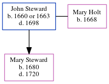

John Steward 1660 - 1698
[ Home ] | [ Calendar ] | [ Surnames Index ] | [ Census Index ] | [ Family History ]John Steward was born on Jan 1, 16601 and had 1 child with Mary Holt: Mary.he arrived in Virginia in 1683.
He died in 1698.
Children
- Mary was born in 1680
Citations
- Passenger and Immigration Lists Index, 1500s-1900s Online publication - Provo, UT, USA: The Generations Network, Inc., 2006.Original data - Filby, P. William, ed.. Passenger and Immigration Lists Index, 1500s-1900s. Farmington Hills, MI, USA: Gale Research, 2006.Original data: Filby, P. William, ed.. Passe
Family Tree
Generated by ged2site. Last updated on Jun 6, 2024